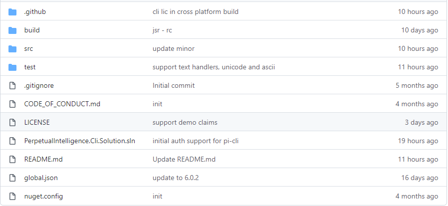

Overview
What is pi-cli?
pi-cli is the most flexible cross-platform framework for building modern CLI terminals for your company, product, service, SaaS, development, and testing needs. Users, customers, and enterprises across engineering, manufacturing, technology, digital industries, digital twins, artificial intelligence, machine learning, finance, media, creative design, etc., can create CLI apps with few flags or advanced CLIs with roots, groups, sub-commands, arguments, and options.
Take your app or service to the command line with Unicode support and build CLI terminals in a user language of your choice.
Craftsmanship
We crafted the pi-cli framework to be cross-platform, hosting and deployment agnostic, and fully customizable. We strongly believe .NET provides a rich set of DSL and DDD tools and languages, and pi-cli directly supports the .NET (traditional), .NET core, ASP.NET Core, and NET6+ framework. Thus it is naturally the defacto standard in developing cross-platform CLI systems for your apps, services, and developer tools in the entire .NET ecosystem. It lets enterprises build ground-up CLI terminals or migrate their existing CLI apps and terminals with the modern, scalable and distributed architecture.
- Build and configure your CLI terminal using microservices-based architecture principles, Dependency Injection(DI services), and options pattern.
- Use default handlers or provide custom implementations to handle terminal UX, command parsing, error handling, command validations, storage, and type checking.
- Provide self-hosting implementations for stores and hosts in an environment of your choice, e.g., Windows, Linux, macOS, Docker, Kubernetes, etc.
- Build deployment agnostic CLI terminals with all dependencies, test them in local environments and deploy the production terminals on-premise, cloud (public, private, or government), or hybrid.
- Enable enterprise-grade secured CLI applications for your products and services similar to Github CLI, .NET CLI, Stripe CLI or CLI terminals with custom formats.
- Collaborate in an open-source environment, troubleshoot issues, and provide your feedback on the features and documentation
- Use demo license for quick onboarding, testing, and evaluating ready-to-use samples on GitHub. No account is needed.
The framework handles the entire CLI infrastructure, so your focus is on building modern CLI apps and services.
In short, if what you want to achieve is doable in the .NET ecosystem, it is possible with
pi-cli.
Open Source
Our entire source code is on GitHub. It enables community collaboration, troubleshoot issues, and helps get us your feedback on the features and documentation. It also promotes a better understanding of architecture and design.
See our licensing terms, licenses and pricing.
OS
Our CICD pipeline builds the framework with Github hosted runners for the following OS platform. However, it supports all the additional platforms that .NET supports.
Packaging
The licensed libraries can be accessed via Nuget:

Build
The GitHub repo contains all the build and release artifacts to build, test and publish the pi-cli source.

Terminal UX
The pi-cli framework does not enforce any specific terminal or console UX experience because this is always custom to the project. However, we provide you with a starting point for your terminal lifetime and UX customization.
Classes
Learn to Use
With the pi-cli framework, you don't have to be a microservices or distributed systems expert to build a modern and scalable CLI terminal. You create and learn as you go on, and eventually, you become an expert :) similar to an eventually-consistent system. Build CLIs for simple use cases, CLI terminals that handle authentication, or CLI terminals that interact with a complex distributed system via protected APIs. We believe in agile development and agile learning. So, pick a learning model that works for you!
I want to explore the samples on GitHub
- Use our demo license for quick onboarding, evaluation, and testing sample code base on GitHub
- No account is needed
I want to create my first modern CLI
- Start by subscribing or buying the
pi-cliSaaS service. - Pick a pricing plan that works for you. Our community edition is free for educational, research, and non-production use.
- Activate your subscription on our SaaS Consumer Portal.
- Generate your license keys.
- Browse our read-to-use templates and tutorials.
- Build, debug, make changes and learn the concepts as you go.
- We cant wait to see the fantastic CLI terminals you build!
I want to understand the concepts first
Continue reading, and we will explain all the concepts. We recommend you get familiar with the common architectural principles first as they enable our framework to be extendible, customizable, and remain scalable.
- Dependency Injection
- Dependency Inversion
- Options Patterns
- Separation of concerns
- Single Responsibility
- Bounded Context
Code Samples and Tutorials
Our ready-to-use templates and sample tutorials will get you started in no time.
Licensing and Pricing
The software license and pricing model is flexible and fits all, whether you are a community member, solo entrepreneur, small-medium business, large enterprise, or a service vendor.
Issues and feature requests
Please report issue or feature request directly on our official github repo.